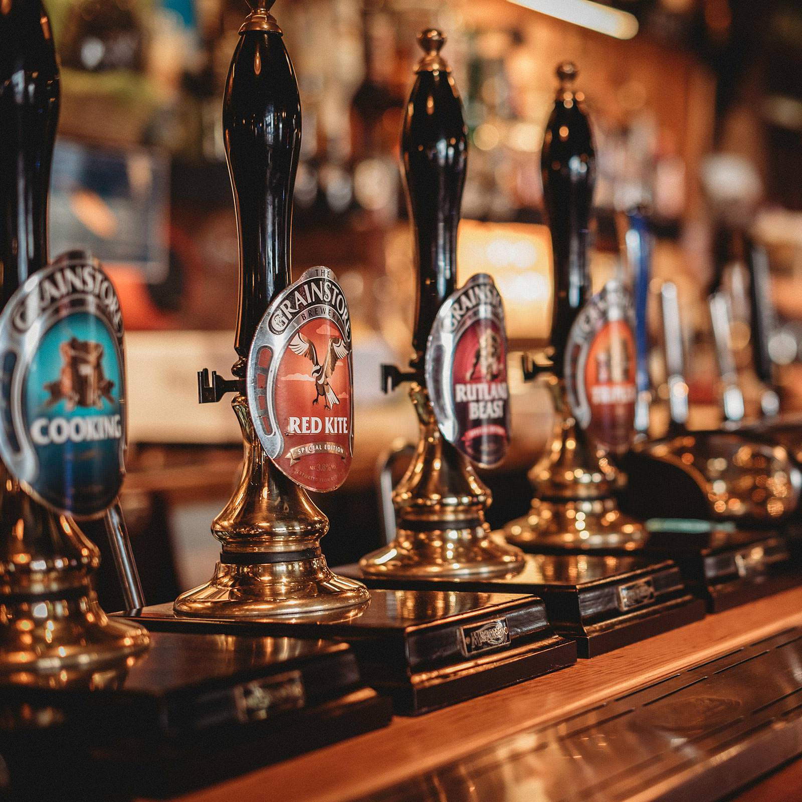
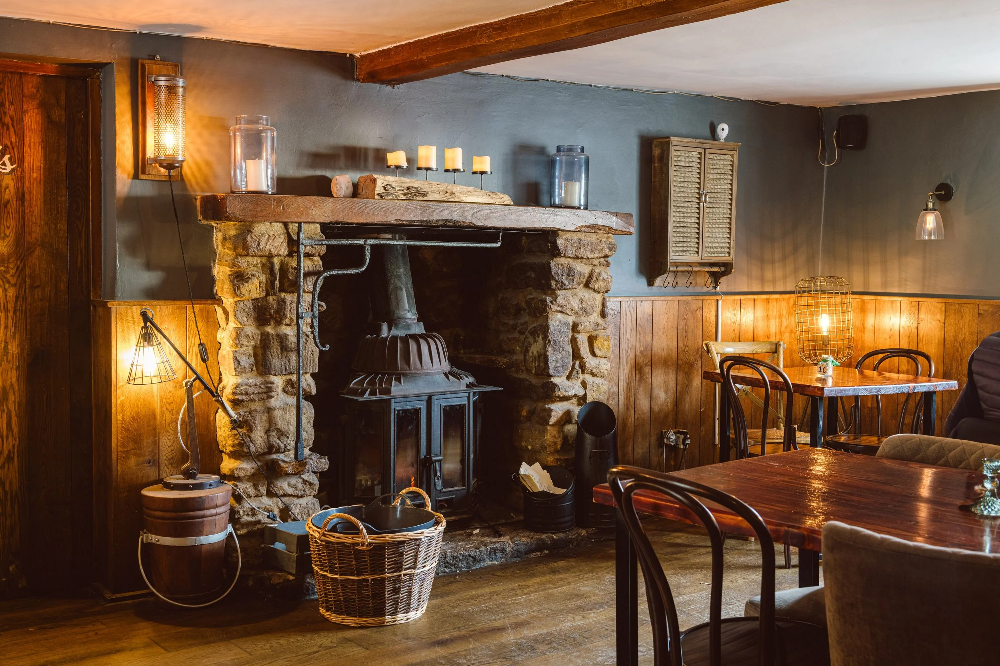
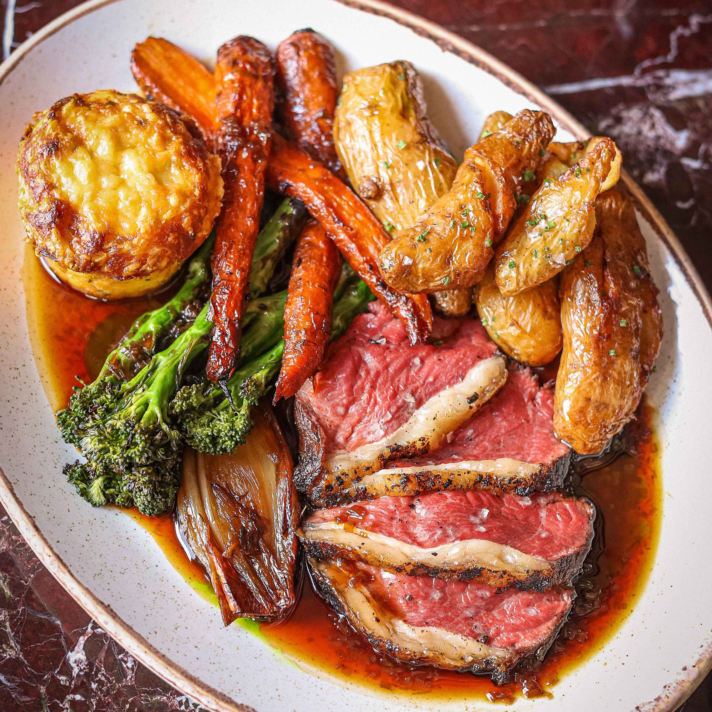
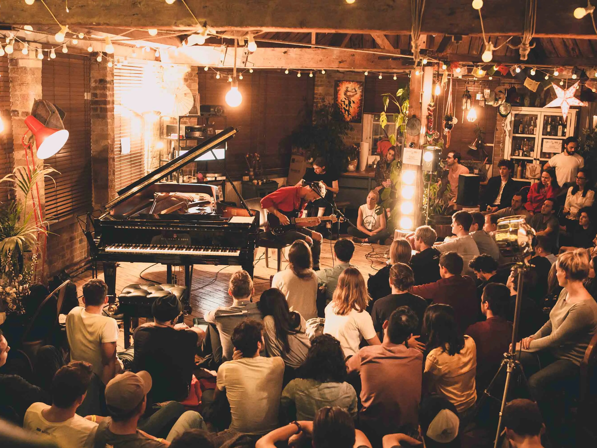

Real Ales & Craft Beer
Eight rotating hand-pulled ales from Kent microbreweries, plus a curated selection of craft bottles and premium lagers.
Ashford's Finest Traditional Pub
Pull up a chair, order a pint of our hand-pulled ale, and experience the warmth of a true British pub — serving the community since 1847.
Mon–Thu: 12pm–11pm
Fri–Sat: 12pm–12am
Sun: 12pm–10:30pm
14 High Street
Ashford, Kent TN24 8TD
01233 456 789
hello@thecopperkettle.co.uk
Lunch: 12pm–3pm
Dinner: 5pm–9pm
Sunday Roast: All Day
Nestled on Ashford's historic High Street, The Copper Kettle has been the beating heart of the community for over 175 years. Our oak-beamed interior, roaring open fire, and carefully curated selection of cask ales create an atmosphere that modern bars simply cannot replicate.
Whether you're joining us for a quiet pint after work, a celebratory Sunday roast with the family, or a lively quiz night with friends, you'll always find a warm welcome and a seat by the fire.
Discover Our Story
From locally brewed real ales to hearty British classics, everything at The Copper Kettle is crafted with care.

Eight rotating hand-pulled ales from Kent microbreweries, plus a curated selection of craft bottles and premium lagers.

Seasonal menus featuring locally sourced ingredients. Our legendary Sunday roasts are booked weeks in advance.

Live music every Friday, pub quiz on Wednesdays, and private hire for celebrations of all sizes.
“The Copper Kettle is everything a British pub should be — great beer, incredible food, and staff who make you feel like a regular from day one. Our Sunday roast here is a family tradition.”— Sarah & James Mitchell, Ashford
Whether it's an intimate dinner for two or a gathering for twenty, we'd love to welcome you. Reserve online or give us a call.